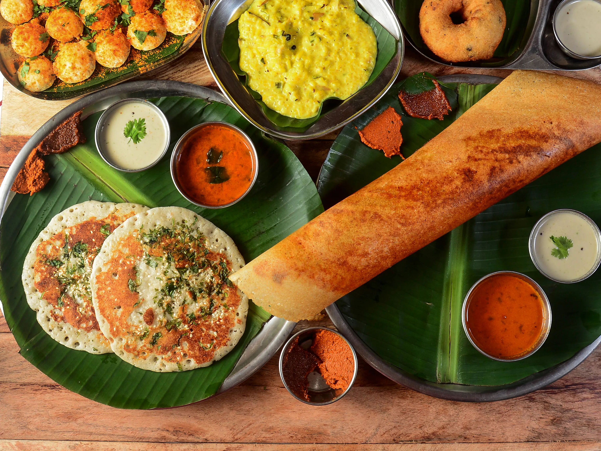

Malay food is strong, spicy and aromatic, combining the rich tastes of the many herbs and spices commonly found in Southeast Asia. It is one of three major cuisines in Malaysia, and together with Chinese and Indian food, continually delight visitors to the country with its incredible variety and flavors.
Traditional Indian food is renowned worldwide for its wonderful use of herbs and spices, and its diverse range of deep-fried snacks, pastries, curries, gravies, sauces, rice dishes, tandoor-cooked meats, vegetable dishes, chutneys, breads and sweets.

Savory food, dishes with a keen relish and spicy seasoning, as well as a wide range of various sauces prevail in traditional dishes. However, a favorite ingredient of all Chinese dishes is rice. It is used to cook lots and lots of garnishes for various dishes; it also replaces bread in Chinese cuisine.